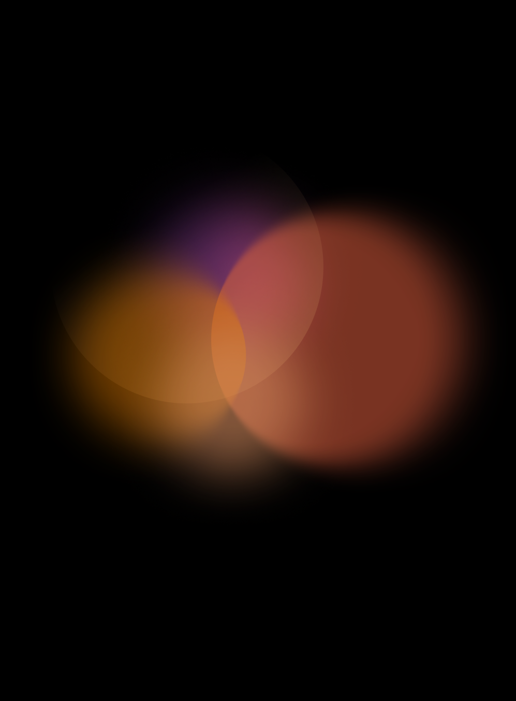

背景
背景色彩与形态 Token 作为界面视觉基底，确保跨设备呈现一致。
1. 设计原则
01
识别性优先
背景服务于内容，不抢主体信息。
02
简化形态
远距离观看下细节会丢失，形态需概括。
03
限制色数
单屏主色颜色过多会导致视觉混乱。
04
预留安全区
边缘区域可能因拼接或边框被遮挡。
05
可执行优先
规范以定性规则为主，不设难以落地的硬性参数。
2. 颜色规范
A
基础色板
品牌色：用于品牌露出、氛围装饰，需严格控制面积。
中性色：黑、白、灰阶，作为背景色和低端色主力。
功能色：橙、绿、蓝、紫，用于参数色表达，不作为大面积背景。
B
色数限制
单屏背景颜色数量不超过 4 种主色。
渐变背景的色标不超过 4 个。
C
禁用色与慎用色
纯红大面积背景（易与警示混淆）。
纯蓝大面积背景（LED 蓝光衰减快，易偏色）。
高饱和绿色（部分 LED 屏绿色偏黄）。
低对比灰色组合（远距离下无法分辨）。

3. 形态规范
基础形态类型

形态粒度
线条、点阵、条纹的密度需保证远距离可辨识，过密会闪烁或消失。
具体尺寸不设硬性参数，以实际屏幕观看效果为准。
原则：宁可粗放，不可细碎。

4. 变形规则
变形的触发条件
尺寸变化：屏幕分辨率或拼接数量变化。
观看距离变化：近看与远看的识别需求不同。
内容密度变化：信息量大时需简化背景。
环境光变化：强光或暗光下需调整背景策略。
缩放规则
背景形态优先等比缩放，保持比例不失真。
非等比拉伸仅限纯色和均匀渐变，禁止用于点阵、条纹、几何图形。
缩放后需重新确认形态是否仍然可辨识。
形态简化规则
| 原始形态 | 降级策略 |
|---|---|
| 多色渐变 | 减为双色渐变或纯色 |
| 细密点阵 | 加大点间距或改为纯色 |
| 细条纹 | 加粗间距或取消 |
变形后的可读性校验
变形后文字是否仍然清晰可读。
变形后形态是否产生摩尔纹或闪烁。
变形后层级关系是否清晰。
变形后是否仍符合品牌调性。


禁止的变形方式
禁止扭曲、倾斜导致形态失真的变形。
禁止过度压缩导致形态细节丢失。
禁止在文字下方叠加高对比变形形态。
禁止无规律随机变形，需有明确规则。